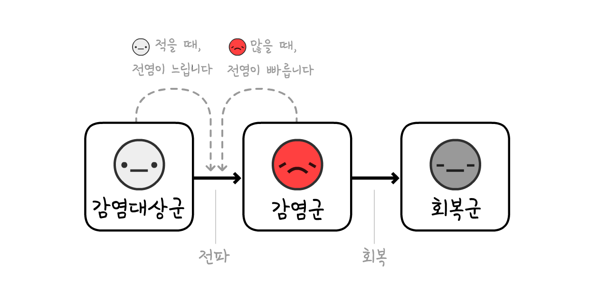
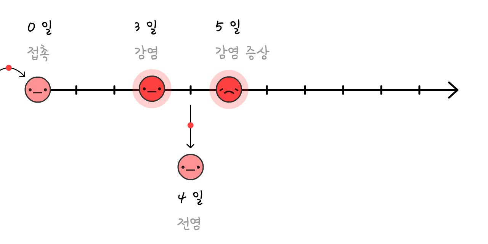
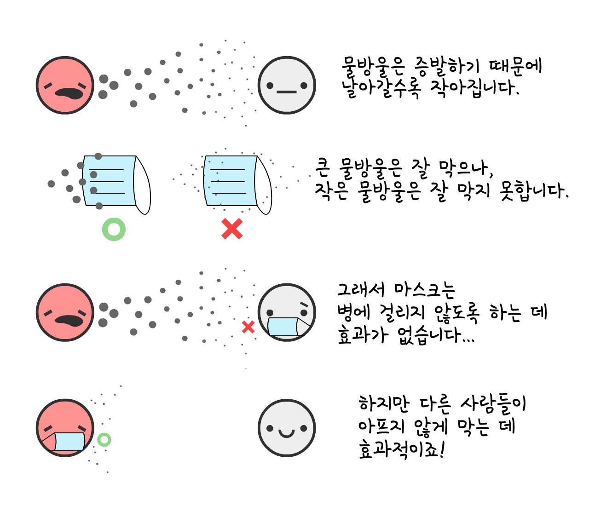

"두려워해야 할 것은 오직 두려움 그 자체이다"는 어리석은 조언이었습니다.
물론, 화장지를 사재기하지 말아야 하죠. 하지만 정책 입안자들이 두려움 자체를 두려워하면, "집단 공황"을 막기 위해 실제 위험을 경시할 것입니다. 두려움은 문제가 아닙니다. 어떻게 두려움을 극복 하는지가 문제죠. 두려움은 지금 위험에 대처하고, 나중에 있을 위험에 대비할 힘을 줍니다.
솔직히, 우리 (마르셀, 전역병학자 + 니키, 그림/코드)는 걱정하고 있습니다. 당신도 그럴 거라고 생각합니다! 우리의 두려움을 말미암아 상호작용형 시뮬레이션을 만들게 되었습니다. 당신도 두려움을 이해하고 이겨내보세요:
- 지난 몇 달 (역학 101, SEIR 모형, R & R0)
- 다음 몇 달 (락다운, 동선 추적, 마스크)
- 다음 몇 년 (면역 손실? 백신 없음?)
이 안내서는 (2020년 5월 1일 발행. 각주를 클릭하세요!→[1]) 희망 그리고 두려움을 주기 위한 것입니다. COVID-19를 정신 및 재정 건강을 위해, 계획을 세우려면 낙관적인 생각이 필요하고 백업 계획을 세우려면 비관적인 생각이 필요합니다. 글래디스 브론윈 스턴 작가가 말했듯이, “낙관주의자는 날 수 있다는 희망에 비행기를 발명하고, 비관주의자는 추락할 수 있다는 염려에 낙하산을 발명합니다.”
자, 이제 단단히 준비하시고 난기류를 경험하세요.

비행기 조종사는 추락하지 않기 위해 비행 시뮬레이터를 사용합니다.
전염병학자들은 인류를 돕기 위해 전염병 시뮬레이터를 사용합니다.
자, 아주 아주 간단한 “전염병 비행 시뮬레이터” 입니다! 이 시뮬레이션에서
COVID-19 바이러스 발생 초기에 평균적으로 [2] 4일마다
만약 인구의 0.001%
시뮬레이션을 재생하시려면 "시작"을 클릭하세요! 나중에 다른 설정으로 해보실 수 있습니다: (기술 참고 사항: [3])
이것은 지수적 성장 곡선입니다. 처음에는 적은 수로 시작해서 기하 급수적으로 증가하죠. “아 그냥 독감인가” 에서 “아 맞다. 독감으로 부유한 도시에서 사람들이 대량으로 죽어나가지 않는데”.
하지만 이 시뮬레이션은 틀렸습니다. 다행히도 기하 급수적으로 늘어날 수 없습니다. 다른 사람들이 바이러스를 이미 가지고 있으면 바이러스가 전달되지 않습니다:
이 사실로 전염병 성장 곡선이 어떻게 바뀔까요? 한번 알아봅시다:
이것은 “S-자형” 로지스틱 성장 곡선입니다. 처음에는 적은 수로 시작해서 기하 급수적으로 증가하다가 증가 속도가 느려집니다.
하지만 이 시뮬레이션 역시 틀렸습니다.
단순화하기 위해, 모든
COVID-19는
이것은 지수적 성장 곡선의 반대인 지수적 감쇠 곡선입니다.
이제 S-자형 로지스틱 성장 곡선에 회복을 포함 해서 가정하면 어떻게 될까요?

한번 알아봅시다.
빨간색 곡선은 현재 사례이고
회색 곡선은 총 사례입니다 (현재 확진자 + 회복
여기서 그 유명한 곡선이 나옵니다! 종형 곡선은 아니고, “로그 정규분포” 곡선도 아닙니다. 이름은 없습니다. 하지만 이 곡선을 수십억번 보셨고 평평해지기를 바라셨을 겁니다.
이것은 SIR 모형입니다,[5]
(
역학 개론에서 두 번째로 중요한 개념입니다:

참고: 실제 시뮬레이션은 이보다 훨씬 더 정교합니다! 그러나 SIR 모형은 자세한 뉘앙스 없이 일반적인 결과를 설명할 수 있습니다.
실제로 한 단계를 추가해보겠습니다.
(이 새로운 질병 확산 모형을 SEIR 모형 라고 합니다.[6], "E"는
COVID-19는
빨간색 + 분홍색 곡선은 현재 사례이고 (
회색 곡선은 총 사례입니다. (current + recovered
많이 달라지지 않았습니다! 얼마나 오래
왜일까요? 역학 개론에서 첫 번째 로 중요한 개념때문입니다:

"감염재생산수"라고 합니다.
R 은 면역과 개입 방법이 늘어남이 따라 변화합니다.
R0 (R-노드라고 발음)은 면역 또는 개입 전에 발병한 시점입니다. R0은 바이러스의 자체의 힘을 더 자세히 반영하지만 장소마다 다릅니다. 예를 들어, R0은 시골 지역보다 도시 지역에서 더 높습니다.
(대부분의 뉴스 기사 및 일부 연구 논문에서 R과 R0를 혼동 합니다! 용어가 좀 헷갈리죠.)
“그” 계절 독감의 R0은 약 1.28[8]입니다. 그 말은, 독감 시즌이 시작될 때
COVID-19의 R0은 약 2.2명으로 추정했습니다.[9] 하지만 아직 진행되고 있는 한 연구는 우한에서 5.7(!)명이라고 추정했습니다.[10]
시뮬레이션은 시작과 평균적으로
R0 계산기를 이용하여 R0가 회복 시간과 새로운 감염까지 걸리는 시간에 어떻게 영향을 미치는지 확인하세요:
하지만 명심하세요.
집단의 대부분이 면역력을 가졌으면, R < 1이며 방역이 이뤄집니다! 이것이 바로 집단면역 이라고 합니다*. 독감의 경우 백신으로 집단면역이 이뤄집니다. 사람들이 감염되도록 방임하여 "자연적으로 집단면역"을 이룬다는 전략은 끔찍한 생각입니다. (그러나 생각하시는 이유 때문은 아닐겁니다! 나중에 설명하겠습니다.)
이제 SEIR 모형을 R0를 포함해 다시 해봅시다, 시간에 따른 R과 집단면역 역치값을 확인해보세요:
참고: 집단면역의 경우 총 사럐는 멈추지 않고 계속 증가합니다! 그리고 현재 사례가 정점에 도달할때 정확하게 집단면역의 사례는 교차합니다. (설정값에 관계없이 발생합니다. 직접 시도해보세요!)
이 안내서에서 한 가지만 얻으신다면, 여기 있습니다. 굉장히 복잡한 도표이므로 충분한 시간을 두고 숙지하세요:
즉, COVID-19를 멈추기 위해서 모든 감염이나 거의 근접한 감염을 막을 필요 없습니다!
역설적이죠. COVID-19는 전염성이 매우 높지만, 이겨내기 위해서는 “단지” 60% 이상의 감염만 막으면 됩니다. 60%?! 만약 그게 학교 성적이었다면, D-겠네요. 그러나 R0 = 2.5인 경우, 61%로 줄이면 R = 0.975, R < 1이 됩니다. COVID-19를 이겨낸 것이죠! (공식:[12])
(시뮬레이션의 R0나 다른 수치가 낮거나/높다고 생각하신다면, 새로운 가정을 세워보세요! 이 안내서 끝에 "샌드박스 모드"가 있습니다. 당신이 생각하시는 숫자와 그로인한 상황을 시뮬레이션해보세요.)
모든 COVID-19 예방조치나 추가적인 조치는 - 손 씻기, 사회적/물리적 거리두기, 락다운, 자가 격리, 동선 추적, 쿼런틴, 마스크, "집단면역"도 포함 - 전부 한 가지 목적을 이루기 위함입니다:
R < 1 되는 것을 목표로 합니다.
자, 이제 우리의 "전염병 시뮬레이터"를 통해 알아봅시다: 어떻게 하면 정신건강 그리고 재정건강을 지키면서 R < 1을 이룰 수 있을까요?
비상착륙을 위해 마음의 준비하세요…
…더 끔찍했을 수도 있었습니다. 우리가 피한 평행 우주는 이렇습니다:
###시나리오 0: 아무것도 하지 않았을 경우
COVID-19에 감염된 약 20명 중 1명이 중환자실 (ICU)에 입원합니다. [13] 미국과 같은 부유한 나라에서는 3400명당 1 개의 중환자실 병상이 있습니다.[14] 그러므로, 미국은 동시에 3400명당 20명, 즉 인구의 0.6%를 수용할 수 있습니다.
3배 이상 늘어나서 2%까지 수용해도, 아무것도 하지 않았을 경우는 이렇습니다.😗
좋지 않습니다.
3월 16일 임페리얼 칼리지 보고서에 따르면: 아무것도 하지 않았을 경우, 중환자실 병실이 현저히 부족하고 인구의 80%가 감염될 것으로 예측했습니다. (참고: 총 사례가 집단면역을 했을 때 계속 증가했습니다)
감염군 0.5%만 사망한다고 해도 - 중환자실 확보를 할 수 없을때 가정한 수치 - 미국처럼 큰 나라는 감염된 80%의 0.5%가 사망해도 120만명이나 되는 인구가 사망하게 됩니다… 아무것도 하지않았을 때는요.
(많은 뉴스와 소셜 미디어는 "우리가 아무것도 하지 않았다는* 전제를 제외하고 "80%가 감염될 것"이라고 보도했습니다. 두려움은 이해가 아닌 클릭으로 이어졌습니다. 아이고.)
###시나리오 1: 역학 곡선을 평평하게 / 집단면역
모든 공중 보건 기구가 “역학 곡선을 평평하게” 한다는 계획을 내세웠고, 영국의 “집단면역” 전략은 전세계적으로 야유받았습니다. 하지만 같은 계획입니다. 영국은 잘못 선전한 것이었죠.[15]
그러나 두 계획 모두 치명적인 결함이 있었습니다.
먼저, "곡선을 평평하게"하는 두 가지 주요 방법을 살펴 봅시다: 손 씻기 & 물리적 거리두기.
고소득 국가에서 손 씻는 비율이 증가했을때 일반 감기와 독감 발생률이 25%가 감소한 반면에[16], 대도시 락다운이 내려진 런던의 경우 ~70%까지 감소하였습니다[17]. 따라서, 손 씻기가 R의 수치를 25%까지 감소시키고 거리두기가 R의 수치를 70%까지 감소시켰다고 가정해봅시다:
이 계산기를 사용하여 몇 %의
자, 2020년 3월부터 손 씻는 비율이 증가했다고 가정해보면 어떻게 되는지 시뮬레이션 해봅시다. 3월부터 손 씻는 비율이 증가했고 가벼운 물리적 거리두기만 했다고 하면 - R은 감소하지만 여전히 1보다는 높습니다:
세 가지 결론:
-
총 사례가 감소합니다! R < 1는 않았지만, R이 감소하면 여전히 생명을 구할 수 있고, 집단면역의 ‘계속 증가하는’ 현상을 줄입니다. 많은 사람들은 "역학 곡선을 평평하게"하면 총 사례를 줄이지 않고 퍼뜨린다고 생각합니다. 이것은 어떠한 전염병개론에 나오는 모형에서는 불가능 합니다. 그러나 뉴스가 “80% 이상의 사람이 감염될” 것으로 보고했기 때문에 사람들은 총 사례가 무엇이든 상관없이 동일하다고 믿는 것입니다. 에휴.
-
추가적인 조치로 인해, 현재 사례는 집단면역이 이뤄지기 전에 최고점에 도달합니다. 실제로 이 시뮬레이션에서 총 사례는 영국의 집단면역 계획보다 아주 약간 증가합니다. 그 시점에서 R < 1, 다른 조치를 하지않아도 COVID-19를 이겨냅니다. 음, 한 가지 문제를 제외하고서요…
-
여전히 중환자실에 병실이 부족합니다. 몇 달 동안이나. (이 시뮬레이션에서 이미 3배나 중환자실을 늘렸다고 가정한 것을 기억하세요.)
3월 16일 임페리얼 칼리지 보고서에 따르면, 영국이 원래 계획을 포기하게 한 또 다른 발견이 있습니다. 완화(R 감소, R < 1) 시도는 실패할 것이고, 유일한 방법은 억제 시도입니다 (R 감소, R < 1).
즉, 단순히 곡선을 “평평하게” 만들지 말고, 부셔야 합니다. 예를 들어…
###시나리오 2: 몇 달에 걸친 락다운
5개월에 걸친 락다운으로 역학 곡선을 부시고
앗.
이것이 흔히 말하는 "두번째 유행"입니다. 락다운을 헤졔하자마자, R > 1이 됩니다. 따라서, 완치되지 않은
락다운은 치료법이 아니라 다시 시작하는 것입니다.
그러면, 락다운을 계속하고 또 해야할까요?
###시나리오 3: 간혈적 락다운
3월 16일 임페리얼 칼리지 보고서와 추후 하버드대 신문에서 제시된 방법입니다.[19]
여기 시뮬레이션을 해봅시다: ("정해진 시나리오"를 해보신 후에는 시뮬레이션이 진행되는 동안 슬라이드 바를 이용해 자체 락다운 기간으로 시뮬레이션 해보세요! 시뮬레이션을 일시 정지, 계속 재생, 속도 변경하실 수 있음을 명심하세요.)
이 경우 중환자실 수용력 미만으로 유지할 수 있습니다! 그리고 백신이 만들어질때까지 18개월동안 락다운하는 것보다 훨씬 낫습니다. 우리는… 몇 달간 락다운하고, 몇 달동안 열고, 백신이 개발될때까지 반복하면 됩니다. (그리고 백신이 없다면, 2022년에… 집단면역에 도달할 때까지 반복하면 됩니다.)
"중환자실 수용력"이라고 기준을 정하는 것도 좋지만, 시뮬레이션에 포함할 수 없는 중요한 것들이 많이 있습니다. 얘를 들어:
정신 건강: 외로움은 우울증, 불안 및 자살의 가장 큰 위험 요소 중 하나입니다. 그리고 하루의 담배 15 개피를 피우는 것과 같이 조기 사망에 관련있습니다.[20]
재정 건강: "경제는 어떻습니까"는 생명보다 돈에 더 걱정하는 것처럼 들리지만, "경제"는 단순히 주식을 의미하지 않습니다. 사랑하는 사람들에게 음식과 지붕을 제공할 수 있는 능력과 자녀들의 미래와 예술, 음식, 비디오 게임, 우리 인생을 즐길 수 있는 여유입니다. 게다가, 가난은 심신 건강에 안 좋은 영향을 미칩니다.
우리가 다시 락다운 하지 말아야 한다는 말은 아닙니다! 나중에 락다운으로 인한 "서킷 브레이커"에 대해 자세히 살펴봅시다. 그래도 이상적이지 않습니다.
잠시만요… 한국과 대만은 이미 성공적으로 방역했다고요? 4개월 동안 장기적 봉쇄 없이요?
어떻게 한 거죠?
###시나리오 4: 검사, 추적, 격리
“물론, 처음에 한국과 대만이 *했던 것처럼* 할 수 있었지만, 지금은 너무 늦었어요. 시작을 놓쳤습니다.”
바로 그거에요! “락다운은 치료법이 아니라 다시 시작하는 것입니다”… 새로운 시작이 우리에게 필요한 것이죠.
한국과 대만이 어떻게 방역할 수 있었는지 이해하려면, COVID-19 감염의 타임라인을 알아야 합니다[21]:

아플때 (증상이 나타날때) 자가 격리한 경우에도 바이러스는 전파될 수 있습니다:
실제로 44%의 모든 전염은: 증상이 나타나기 전에 이뤄졌습니다! [22]
하지만 감염원을 조기발견하고 접촉자를 격리 한다면… 전파를 차단하고 추가 발생을 예방할 수 있습니다!
이것을 역학 조사 라고 합니다. 역학 조사는 예전 에볼라[23]가 유행할 당시에도 시행되었고, 한국과 대만이 방역에 성공적이었던 이유입니다!
(제한적인 검사를 효율적으로 진행하고 모든 사람들을 검사할 필요없이 무증상 단계의
예전에는 면접조사 또는 설문조사로 대면하여 이뤄졌었는데, 그것만으로는 COVID-19의 48시간내에 이뤄질 수 없습니다. 따라서 역학조사관 업무가 폭증하자, 대신하는 것이 아닌, 이를 지원할 역학 조사 어플이 필요합니다.
(이 아이디어는 "기술 전문가"에서 나온 것이 아니었다: COVID-19를 종식할 역학 조사 어플 아이디어는 전염병 학자들 제시한 것이다.)
잠깐만요, 누구와 접촉했는지 추적하는 앱이요?.. 개인 사생활을 빅 브라더에게 포기하라는 말인가요?
절대 아닙니다! DP-3T, 전염병 학자 및 암호학자로 구성된 팀 (마르셀 살라테 포함) 이미 역학 조사 어플을 개발 중입니다. 모두가 사용할 수 있는 코드는 귀하의 신원, 위치, 연락처, 얼마나 많은 접촉을 했는지 같은 정보는 포함하지 않습니다.
그 방법은 다음과 같습니다:

(전체 만화. Details about “pranking”/false positives/etc in footnote:[24])
TCN 프로토콜[25] 및 MIT PACT[26]같은 유사한 팀과 함께 개인 정보 보호 우선 역학 조사를 안드로이드/iOS에 직접 적용하도록 애플과 구글에게 영감을 주었습니다.[27] (구글과 애플을 믿지 않으세요? 잘됐네요! 이 시스템은 굳이 신뢰할 필요가 없어요!) 곧, 지역 공공 보건 기관에서 앱을 설치하도록 요청할지도 모릅니다. 공개 가능한 코드로 개인 정보 보호가 우선된 어플이면, 그렇게 하세요!
하지만 스마트폰이 없는 사람들은 어떻게 할까요? 아니면 문 손잡이를 통한 감염은요? 그게 아니면 "무"증상 사례는요? 역학 조사 앱으로 모든 전염을 알아낼 수 없지만… 그래도 괜찮아요! 우리는 모든 상황이 아닌 60% 이상만 차단해도 R < 1를 이룰 수 있습니다.
(각주: 잠복기 감염 vs “무증상” 감염에 대한 고찰. “무증상” 감염은 매우 희귀합니다:[28])
유증상 감염자들을 격리했을때 R은 40%까지 감소하고, 역학적 연관이 있는 잠복기/무증상 감염자들을 격리했을때 할것으로 추정하였습니다:
그러므로, 100% 비접촉 격리없이도 R < 1를 이뤄낼 수 있습니다. 락다운 없이도! 정신과 재정에 훨씬 더 좋은 것이죠. (자가격리/격리된 확진자들을 위해 국가 지원이 필요합니다 – 진단 검사비 지원, 근로 보호, 유급휴가 지원, 등등. 여전히 간혈적 락다운보다 사회적 비용은 적을 것입니다.)
백신이 개발될때까지 R < 1를 유지해야 합니다.
(참고: 이 계산기는 백신이 100% 효과있다고 가정합니다. 실제로는 백신 접종률을 더 늘려서 자연스럽게 집단 전체의 방역을 이뤄냅니다.)
좋아요, 이제 얘기 말고 시뮬레이션을 해봅시다:
- 몇 달에 걸친 락다운…
- “검사, 추적, 격리”…
- 많은 백신 접종률…
- 우리 승리.
바로 그겁니다! 그런 식으로 이 비행에서 긴급탈출하는 겁니다.
그렇게 COVID-19가 종식합니다.
…
하지만 일이 그래도 잘못되면 어쩌죠? 상황은 이미 끔찍하게 잘못되었어요. 이 두려움, 아주 좋아요! 두려움은 백업 계획 을 세울 힘을 주니까요.
비관주의자는 낙하산을 발명해야 합니다.
###시나리오 4+: 모두를 위한 마스크, 여름, 서킷 브레이커
만약 R0값이 우리가 생각한 것보다 더 높으면, 여러 조치에도, 가벼운 거리두기에도, 그래도 여전히 R < 1을 이뤄낼수 없으면 어떻게 하죠?
명심하세요. 우리가 R < 1 달성하지 못해도, R값이 감소하면 총 사례가 “멈추지 않고 계속 증가하는” 것은 막을 수 있어요. 따라서, 여러 생명을 구할 수 있겠죠. 하지만, R < 1 이 이상적이죠. R을 감소시킬만한 다른 방도입니다:
모두를 위한 마스크:
“잠깐만,얼굴 마스크는 병에 걸리는 걸 막지 못하는 줄 알았는데?” 하고 의아해 하실 수 있습니다.
맞아요. 마스크는 당신이 병 걸리는 것을 막지 않아요[29]… 다른 사람들이 아프지 않게 막아주죠.

숫자로 얘기해봅시다: 전염군이 수술용 마스크를 착용했을때 감기와 독감 바이러스 에어로졸의 확산이 70%까지 감소하였습니다.[30] 전염률을 70%까지 감소하면 락다운 효과와 같습니다!
하지만, 마스크가 COVID-19에 구체적으로 미치는 영향을 확실히 알지 못합니다. 과학세계에서는 95%의 신뢰가 있으면 연구 결과를 발표합니다. (…신뢰하면요.[31]) 2020년 5월 1일자 기준, 마스크의 “신뢰수준은 95%보다 낮습니다”.
그러나, 팬데믹은 포커와 같습니다. 95% 확실할 때 내기를 하면, 모든 것을 위태롭게 할 겁니다. 영국 의학 논문에 실린 마스크에 관한 최근 기사에서,[32] 불확실한 상황에서 비용과 편익 분석을 해야 한다고 했습니다. 그러니까:
비용: 집에서 만든 천 마스크라면, 엄청 쌉니다 (수술용 마스크보다 2/3만큼 효과적 입니다[33]). 수술용 마스크라면 더 비싸지만 그래도 꽤 쌉니다.
편익: 수술용 마스크가 50 대 50의 확률로 전파율이 0% 혹은 70% 감소하는데, 평균 "기대치"가 35%이므로, 락다운에 반 이나 되는 셈입니다! 그러니까 수술용 마스크가 R를 35%나 감소시킨다고 해봅시다. (슬라이더를 위/아래로 움직여 새로운 가정을 세울 수 있습니다)
(마스크에 대한 기타 주장:[34])
"제대로 착용하기 어렵습니다." WHO 지침에 따라 손을 씻는 것도 어렵습니다, “3 단계: 오른쪽 손바닥을 왼쪽 손등위로 올린다”?! 하지만 여전히 손 씻기를 추천합니다. 왜냐하면 완벽하지 않아도 아예 안하는 것보다 낫기 때문입니다.
"손 씻기나 사회적 거리두기가 잘 지켜지지 않을 겁니다." 그래요, 그럼 안전벨트는 사람들로 하여금 정지 표시판을 무시하게 하고, 치실은 바위를 먹게 만들겠네요. 하지만 정말로, 그에 반대예요. 마스크는 조심하라는 물리적 알림 이죠. 그리고 동아시아서는 마스크는 연대의 상징이고요!
오직 마스크만 쓴다고 R < 1를 만들 수 없어요. 손 씻기와 "검사, 추적, 격리"가 같이 이뤄질 때 R = 1.10가 될 수 있어요. 인구의 1/3가 마스크를 쓰면 R < 1로 넘어가게 될 거에요. 바이러스는 종식이죠!
여름:
좋아요, 우리가 통제할 수 있는 "조치"는 아니지만, 도움이 될 겁니다! 일부 뉴스 매체는 여름이 COVID-19이 아무런 도움이 되지 않을 것이라고 보도했습니다. 반만 맞았습니다: 여름이라고 R < 1를 얻지 못하지만 R을 감소시킬 것입니다.
COVID-19의 경우, 1°C마다 (1.8°F) R이 1.2% 감소합니다.[35] 뉴욕식의 여름과 겨울 온도차는 26°C (47°F) 입니다. 따라서 여름이되면 R이 ~31% 감소할 것입니다.
여름만으로 R < 1이 되지 않습니다. 하지만 자원이 한정되어 있으면, 여름에 비축하고 겨울이 더 많은 조치를 취할 수 있습니다.
"서킷 브레이커" 락다운:
여전히 R < 1를 얻기에 충분하지 않다면… 또 다시 락다운을 할 수 있습니다.
그렇지만 2개월동안 문을 닫고 1개월동안 문을 여는 것을 반복할 필요없습니다! R이 감소하였기 때문에, 백신이 개발될때까지 한두번의 “서킷 브레이커” 락다운만 하면 됩니다. (싱가포르는 최근 4개월동안 COVID-19를 통제했음에도 "“불구하고” 서킷 브레이커 락다운을 실시했습니다. 실패가 아니고, 성공에 필요한 일입니다.)
다음은 “게으른 경우” 시뮬레이션입니다:
- 락다운
- 적당한 위생 & “검사, 추적, 격리” & 적당한 “모두에게 천 마스크”, then…
- 백신이 발견되기 전까지 한번이상의 “서킷 브레이커” 락다운.
R을 더 낮추기 위한 다른 조치들은 말할 것도 없죠:
- 여행 제한/입국 제한
- 쇼핑몰 및 학교에서 온도 점검
- 공공장소 방역
- 손악수 대신 발악수
- 그리고 모든 창의적인 조치
. . .
이 계획들이 당신에게 희망을 주길 바랍니다.
비관적 시나리오에서도, 우리의 정신과 재정 건강을 보호하면서 DOVID-19를 종식시킬 수 있습니다. 락다운 정책을 "리셋 버튼"으로 활용하고, 격리를 통해 R < 1를 만들고 + 개인 정보 보호 우선 역학 조사하고 + 모두가 최소한 천 마스크 착용하면… 보통 비스므리한 삶으로 돌아갈 수 있게 됩니다!
물론 당신의 손이 건조해졌을 수도 있습니다. 그래도 만화책방에 데이트 상대를 초대할 수 있을 겁니다! 친구들과 흥행 위주 할리우드 오락물도 보러갈 수도 있죠. 도서관에 가서 열심히 사는 사람들을 구경 할 수도 있죠.
최악의 경우일지라도… 인내하며 살면 됩니다.
자, 이제 아주 최악의 경우를 대비해봅시다. 해상 비상착륙 예정이니 구명조끼를 착용하시고 불빛을 따라 비상구로 대피하세요:
COVID-19에 감염되고 회복합니다. 또는 COVID-19 백신을 접종 받습니다. 어느 쪽이든 당신은 이제 면역이 되었어요…
…얼마나 오랫동안 일까요?
- COVID-19와 가장 가까운 SARS 바이러스에 생존자들은 2년간의 면역력을 보였다.[^SARS immunity]
- "감기"를 유발하는 코로나 바이러스는 8개월의 면역력을 보였다.[^cold immunity]
- COVID-19에서 회복한 후 다시 양성반응을 보인다는 보고가 있습니다. 하지만 이것이 거짓 양성인지는 불분명합니다.[36]
- 아직 논문심사 전인 한 연구에서 원숭이는 COVID-19에 최소 28일동안 면역력을 보였다.[37]
하지만 2020년 5월 1일 현재, 인간은 COVID-19에 “얼마나 오래” 면역력을 유지하는지 잘 알려지지 않았다.
[^SARS immunity]: “SARS-특정 항체는 평균 2년동안 유지되었다 […] 따라서, SARS 환자는 초기 노출 후 ≥3년 후에 재감염 될 수 있다.” Wu LP, Wang NC, Chang YH, et al. “슬프게도” SARS를 빨리 근절했기 때문에 면역이 얼마나 오래 지속됐는지 알 수 없습니다.
[^cold immunity]: “첫 번째 감염 및 확진 34주후에 한 번 이상 양성 반응이 나올 확률과 베타 코로나 바이러스 HKU1와 OC43에 대한 재발 확률에 유의미한 차이를 발견하지 못했다.” Marta Galanti & Jeffrey Shaman (PDF)
시뮬레이션을 위해, 1년이라고 가정해봅시다.
100%
지수적 감쇠 곡선입니다!
이것은 바로 SEIRS 모형 입니다. 마지막 "S"는 다시
자, COVID-19 발병 후 10년동안 무대응을 시뮬레이션 해봅시다… 그리고 면역력은 1년만 지속될 경우:
이전 시뮬레이션에서는 환자 수가 중환자실 수용 인원을 “한번” 초과했었습니다. 지금은 여러번 변동하고
R = 1이면, 감염병이 인구 집단내에 토착(endemic) 하게 됩니다.
다행히, 여름이 되면 R이 줄어들 것이고 시뮬레이션이 나아질 것입니다:
앗.
반대로, 여름이 더 악화시키고 규칙적이게 됐습니다! 새로운
다행히도 해결책은 매우 간단하죠. 독감 예방주사를 하는 것처럼 매년 가을/겨울에 예방접종을 하면 됩니다:
(이미 설정된 값으로 시뮬레이션 해보시고, 나중에 당신의 예방접종 계획을 시뮬레이션 해보세요! 일시 정지, 계속 재생, 속도 변경하실 수 있음을 명심하세요)
여기 무서운 질문입니다:
만약 백신이 몇 년동안 없다면요? 아니면 평생동안?
분명히 하자면 가능성이 낮습니다. 대부분의 역학 연구자들은 1년에서 2년 안에 백신을 접종할 것으로 예상합니다. 물론 전에 다른 코로나 바이러스 백신은 없었습니다. SARS는 빠르게 근절되었고 “일반” 감기는 투자 가치가 없었기 때문입니다.
그럼에도 불구하고, 전염병 연구원들은 우려가 많습니다: 충분히 만들 수 없다면?[38] 너무 서두르다가 안전하지 않다면?[39]
“백신 없는” 시나리오에서도, 여전히 3가지 방도가 있습니다. 아주 끔찍한 방도에서 덜 끔찍한 방도:
-
"자연적 집단 면역"을 구현하기 위해 간혈적 또는 느슨하게 R < 1 처치를 합니다. (주의: 많은 사망과 폐 손상을 초래할 것입니다. 그리고 면역이 지속되지 않으면 효과 없습니다.)
-
평생 R < 1 조치를 합니다. COVID-19 이후로 세계 역학 조사 및 마스크 착용이 새로운 규범이 됩니다. 성병 검사와 콘돔 착용이 HIV 이후로 새로운 규범이 된 것처럼요.
-
치료법을 개발해 COVID-19로 중환자실 포화가 되지 않도록 계속 R < 1 조치를 합니다. (어쨌든 우리가 해야 할 일이죠!) 중환자실 사용을 10배 줄이면 수용량이 10배만큼 증가하는 것이죠:
이 시뮬레이션에서는 지속적인 면역이 없고, 백신도 없고, 조치도 없습니다. 장기적인 급증에서 살아남기 위해 서서히 용량을 늘립니다:
아주 최악의 경우일지라도… 인내하며 살면 됩니다.
. . .
우리 가정에 동의하지 않으신다면, 다른 R0나 숫자들을 시도해보세요. 아니면 당신의 치료 조치 계획을 세워보세요!
(선택사항) 모든 것을 시도해보실 수 있는 샌드박스 모드입니다! (스크를을 사용해 설정을 바꿔보세요) 원하시는대로 마음껏 시뮬레이션 해보세요:
이 기본적인 “전염병 비행 시뮬레이터는” 많은 것을 가르쳐주었습니다. 지난 몇 달, 다음 몇 달, 그리고 앞으로 몇 년동안의 질문에 답할 수 있죠.
이제 마지막으로, 다시 돌아가보죠…
비행기는 침몰했습니다. 구명 뗏목에 올라탔습니다. 마른 땅을 찾을 시간이네요.[40]
역학자 및 정책 입안자들이 팀을 이뤄 (좌파, 우파, 다당파) 우리의 삶 그리고 자유를 보호하면서 어떻게 COVID-19를 종식시킬 것인가에 대한 합의에 도달했습니다.
(합의되지 않은) 백업 계획과 대략적인 아이디어는 다음과 같습니다:
그럼 지금 당신에게는 무엇을 의미합니까?
모두: 최대한 빨리 1단계에서 벗어날 수 있도록 락다운 상태를 유지하세요. 계속 손도 씻으세요. 마스크도 만드세요. 다음달에 공개될 개인 정보 보호된 역학 조사 어플을 다운받으세요. 신제적, 정신적으로 건강하게 지내세요! 그리고 지역 정책 입안자에게 편지를 써서 꽁지 빠지게 일하라고 재촉하세요…
정책 입안자: 자가격리/시설격리 대상에게 지원하는 대첵을 마련하세요. 역학 조사관을 더 많이 고용하고, 개인 정보 보호된 역학 조사 지원 어플을 개발을 도우세요. 개발해야 자원에 더 많은 자금을 지원하세요…
개발자: 검사를 개발하세요. 인공호흡기를 만드세요. 병원 개인 보호 장비도 만드세요. 검사도, 어플도, 항바이러스제, 예방접종약, 그리고 백신이 아닌 다른 치료법들을 개발하세요. 검사도, 검사도, 검사도 만드세요. 희망을 만드세요.
희망을 쌓기 위해 두려움을 없애지 마세요. 비행기와 낙하산 발명자들처럼 두려움과 희망은 같이 공존해야 합니다. 끔찍한 미래를 대비하는 것은 희망적인 미래를 만드는 방법입니다.
우리가 두려워해야 할 것은 오직 두려움뿐이라는 생각입니다.
이 각주에는 출처, 링크, 보너스 해설을 포함합니다. 이 해설처럼!
이 안내서는 2020년 5월 1일 발행되었습니다. 많은 세부 사항들이 시대에 뒤떨어지겠지만, 우리는 이 안내서가 95%의 미래를 다루고, 역학 101은 영원히 유용할 것이라고 확신합니다. ↩︎
“평균 [연속] 기간은 3.96일입니다 (95% CI 3.53–4.39일)”. Du Z, Xu X, Wu Y, Wang L, Cowling BJ, Ancel Meyers L(고지 사항: 초기 문서는 최종 버전으로 간주하지 않습니다.) ↩︎
모든 시뮬레이션은 교육 목적으로 단순화되었습니다.
단순화: 이 시뮬레이션에 "X일마다 1명씩 감염"이라고 입력하면, 매일 1/X씩 감염자 수가 증가합니다. 이 설정은 다른 시뮬레이션에도 적용됩니다. "X일마다 회복"은 감염자 수가 매일 1/X씩 감소합니다.
정확하게 동일하지 않지만, 충분히 근접하고, 직접 전염성/회복률을 설정하는 것보다 직관적입니다. ↩︎
“평균 전달 가능한 기간은 […] 9.5일입니다.” Hu, Z., Song, C., Xu, C. et al 예, "중앙값"과 "평균"은 같지 않다는 것을 알고 있습니다. 단순 교육 목적을 위해 같은 의미로 사용했습니다. ↩︎
“초기 COVID-19 사례에 관한 연구에서 평균 5.2일의 배양 기간으로 가정할 때, 감염 증상이 나타나기 2.3일 전부터 (95% CI, 0.8–3.0 days) 감염을 시킬 수 있는 것으로 추정했습니다.” (변역: 증상이 5일째 나타난다고 가정했을때, 감염은 2일전부터 전달 가능하다 = 3일째 전달 가능하다.) He, X., Lau, E.H.Y., Wu, P. et al. ↩︎
“계절 독감의 평균 R값은 1.28명입니다. (사분범위: 1.19–1.37)” Biggerstaff, M., Cauchemez, S., Reed, C. et al. ↩︎
“2019-nCoV의 R0 기초감염재생산수가 약 2.2명으로 추정합니다. (90% high density interval: 1.4–3.8)” Riou J, Althaus CL. ↩︎
“평균 R0가 약 5.7명으로 추청합니다. (95% CI 3.8–8.9)” Sanche S, Lin YT, Xu C, Romero-Severson E, Hengartner N, Ke R. ↩︎
“감염된 기간” 내내 똑같은 점염성이 있다고 가정했습니다. 역시 교육 목적을 위해 단순화했습니다. ↩︎
R = R0 * 감염병 전파율. 다시말해, 감염병 전파율 = 1 - 감염병 감소율.
R < 1은 R0 * 감염병 전파율 < 1 가 되어야 합니다.
감염병 전파율 < 1/R0 이며,
1 - 감염병 감소율 < 1/R0 이며,
감염병 감소율 > 1 - 1/R0 이며,
따라서, 바이러스를 막고 R < 1 되기 위해서는 1 - 1/R0 이상의 확산을 멈춰야 합니다! ↩︎
“2020년 2월 12일부터 3월 16일까지 중환자실 입원이 필요한 미국 COVID-19 연령별 사례 비율”. 모든 COVID-19 사례 중 4.9% ~ 11.5%가 중환자실 입원이 필요했습니다. 낮은 연령대의 경우, 5% 였고 20명당 1명이었습니다. 이 총 사례는 미국의 연령 구조에 따른 것이며, 높은 연령대의 인구가 많은 나라에서는 높을 것이고 낮은 연령대의 인구가 많은 나라에서는 낮을 것입니다. ↩︎
“중환자실 병상 수 = 96,596”. 중환자의학회 2009년 미국 인구는 약 328,200,000명이었습니다. 328,200,000명당 96,596개의 병실 = 약 3400명당 1개의 병실입니다. ↩︎
“실제 목표는 다른 국가의 목표와 같다고 말했습니다: 감염의 악순환을 저지해서 역학 곡선을 평평하게 만드는 것입니다. 그로인해 집단면역을 달성할 수 있게 됩니다. 집단면역은 목표가 아니라 부가적으로 이뤄지는 것이며 […] 온라인으로 제공된 정부의 코로나 바이러스 행동 계획서에는 집단면역이 언급되지 않았습니다.”
“모든 8개의 연구에 따르면, 손 씻기로 호흡기 감염의 위험이 6% 에서 44%까지 감소한 것으로 나타났습니다 [합동분산 24% (95% CI 6–40%)].” 이 시뮬레이션에서는 단순화를 위해 합동분산편차를 25%로 반올림하였습니다. Rabie, T. and Curtis, V. 참고: 이 메타 분석에서 짚었듯이, 손 씻기에 대한 연구는 (적어도 고소득 국가에서) 제대로 이뤄지지 않았습니다. ↩︎
“피실험자의 평균 일일 접촉 대상의 수는 73% 감소한 것으로 나타났습니다. 이는 R0이 락다운 전 2.6에서 락다운 후 0.62 (0.37 - 0.89)까지 떨어지기에 충분했습니다”. 이 시뮬레이션에서는 단순화를 위해 70% 감소로 반올림하였습니다. Jarvis and Zandvoort et al ↩︎
R을 로그 배율로 적용하면 이 왜곡현상이 없어질 것입니다… 그러면 로그 배율 설명해야합니다. ↩︎
“다른 조치가 없으면, 사회적 거리두기의 핵심 지표는 중환자실 수용력을 초과하는지 여부입니다. 이를 피하기 위해서는 2022년까지 장기간 또는 간혈적인 사회적 거리두기가 필요할 수 있습니다.” Kissler and Tedijanto et al ↩︎
참고 Figure 6 from Holt-Lunstad & Smith 2010. 물론, 중요한 고지 사항은 인과관계가 아닌 "상관관계"라는 것입니다. 그러나 연구를 위해 무작위로 피실험자들을 평생동안 외롭도록 할당할 수 없는 한, 관측 증거만 있습니다. ↩︎
감염까지 평균 3일: “초기 COVID-19 사례의 연구에서 평균 잠복기가 5.2일이라고 가정했을때, 증상이 나타나기 2.3일전에 (95% CI, 0.8–3.0 days) 발병하는 것으로 추정하였다. (번역: 증상이 5일째 나타난다고 가정했을때, 2일전에 발병 = 3일째 발병) He, X., Lau, E.H.Y., Wu, P. et al.
전염시키는 데 평균 4일: “평균 [연속] 기간은 3.96일로 추정된다. (95% CI 3.53–4.39일)” Du Z, Xu X, Wu Y, Wang L, Cowling BJ, Ancel Meyers L
증상이 나타나기까지 평균 5일: “평균 잠복기는 5.1일로 추정된다. (95% CI, 4.5 to 5.8일)” Lauer SA, Grantz KH, Bi Q, et al ↩︎
“해당 그룹 내 첫 번째로 확인된 감염군의 44%의 (95% CI, 25–69%) 2차 사례는 잠복기 단계때 전파된 것으로 추정된다.” He, X., Lau, E.H.Y., Wu, P. et al ↩︎
“역학 조사는 라이베리아에서 중요한 조치였고 그 규모는 역사상 가장 큰 축에 속한다.” Swanson KC, Altare C, Wesseh CS, et al. ↩︎
To prevent “pranking” (people falsely claiming to be infected), the DP-3T Protocol requires that the hospital first give you a One-Time Passcode that lets you upload your messages.
False positives are a problem in both manual & digital contact tracing. Still, we can reduce false positives in 2 ways: 1) By notifying Bobs only if they heard, say, 30+ min worth of messages, not just one message in passing. And 2) If the app does think Bob’s been exposed, it can refer Bob to a manual contact tracer, for an in-depth follow-up interview.
For other issues like data bandwidth, source integrity, and other security issues, check out the open-source DP-3T whitepapers! ↩︎
애플과 구글과 COVID-19 역학 조사 기술 분야 제휴. 참고로 애플과 구글은 어플을 만든 것이 아니라, 그런 앱을 지원하는 시스템을 구축했다. ↩︎
많은 뉴스 보도에서 - 그리고 솔직히 많은 연구 논문에서도 - “검사할 때 증상이 나타나지 않은 경우” (잠복기 감염)과 “증상이 아예 없는 경우” (무증상 감염)를 구분하지 않고 있습니다. 구별할 수 있는 유일한 방법은 사례를 추적하는 것입니다.
그게 바로 연구 논문 한 것입니다. (고지 사항: “초기 문서는 최종 버전으로 간주하지 않습니다.”) 한국 콜센터에서의 COVID-19 집단발병의 경우, “확진자 4명(1.9%)은 14일의 격리가 끝날 때까지 증상이 나타나지 않았고, 가족 중 2차 감염자가 한명도 없었습니다.”
따라서 "무증상 감염"은 희귀하고 무증상 감염자에게서 전염되는 것은 더 가능성이 낮습니다! ↩︎
“수술용 마스크 중에 호홉기 보호 장치에 맞는 필터 성능과 안면 맞춤이 되는 것은 없다.” Tara Oberg & Lisa M. Brosseau ↩︎
“감염군이 수술용 마스크를 올바르게 착용했을때 전반적으로 에어로졸 유전자 복제수(Copy Number)가 3.4배 감소[70% 감소] 했고, 존슨 등(2009)은 큰 물방울의 확산을 예방하는데 임상적으로 효과적이라고 평가했다.” Milton DK, Fabian MP, Cowling BJ, Grantham ML, McDevitt JJ ↩︎
아마 과학자라면 마지막 문장을 읽고 지금 눈물흘리며 웃음을 터트릴겁니다. 참고: p-해킹, 재현성 위기) ↩︎
“예방 원칙을 적용할 때다.” Trisha Greenhalgh et al [PDF] ↩︎
Davies, A., Thompson, K., Giri, K., Kafatos, G., Walker, J., & Bennett, A 표1: 100% 면 티셔츠는 박테리아 에어로졸에 수술용 마스크의 약 2/3의 필터 효과를 보였다. ↩︎
"병원을 위해서 물자를 아껴야 합니다." 전적으로 동의합니다. 하지만 배급이 아니라 마스크 생산을 늘려야 한다는 주장에 가깝습니다. 그동안 천 마스크를 만들 수 있습니다. ↩︎
“섭씨 1도 상승으로 […] R이 0.0225 감소한다” 그리고 “100개 도시의 평균 R값은 1.83이다”. 0.0225 ÷ 1.83 = ~1.2%. Wang, Jingyuan and Tang, Ke and Feng, Kai and Lv, Weifeng ↩︎
“바이러스를 이겨내면, 바이러스 입자들은 한동안 남아있는 경향이 있다. 재감염을 유발할 수는 없지만 양성 반응이 나올 수 있다.” from STAT News by Andrew Joseph ↩︎
From Bao et al. 고지 사항: 이 기사는 사전 인쇄되어 논문 검사를 통해 (아직) 인증되지 않았다. 또한, 28일 후에야 재감염 검사를 시행했다. ↩︎
“코로나 바이러스 백신 개발을 해도 전세계적으로 충분히 만들 수 있을까?” by Roxanne Khamsi, on Nature ↩︎
“안전 보장없이 COVID-19 백신 및 약물을 배포하기 위해 서두르지 마십시오” by Shibo Jiang, on Nature ↩︎
마른 땅의 비유 Marc Lipsitch & Yonatan Grad, STAT 뉴스 ↩︎
 퍼블릭 도메인
입니다.
퍼블릭 도메인
입니다.